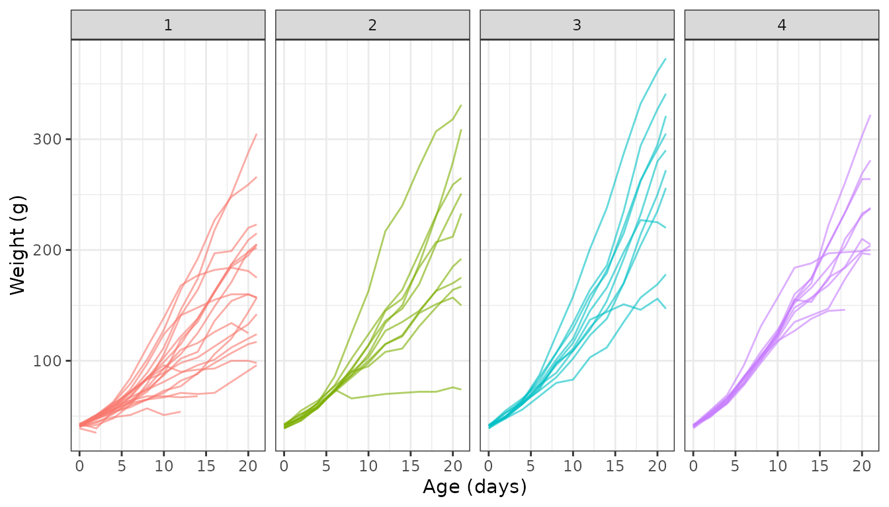

A diet experiment, from plan to report
Source:vignettes/articles/tutorial-experiment.Rmd
tutorial-experiment.RmdThe study. Fifty chicks were fed one of four diets
and weighed every few days from birth to day 21
(ChickWeight, from Crowder and Hand 1990). The
question: do the diets differ in how fast chicks grow?
1. Plan
Before the experiment, tidyvisor lists the good practice for an experiment:
tv_practice("plan", design = "experiment")$advice[, c("step", "recommendation")]
#> # A tibble: 5 × 2
#> step recommendation
#> <chr> <chr>
#> 1 Plan Write the question and the hypothesis before collecting data
#> 2 Plan Define the unit of replication
#> 3 Plan Run a power analysis
#> 4 Plan Randomise, include controls and blind where possible
#> 5 Plan Pre-register the study and the analysis planHow many chicks per diet? Suppose a difference of 40 g at day 21 matters and the standard deviation between chicks is about 50 g:
tv_power("two_groups", delta = 40, sd = 50)
#>
#> ── tidyvisor: how many samples? ────────────────────────────────────────────────
#> Question: power
#>
#> ── What the data show ──
#>
#> • Design: two_groups
#> • Effect to detect: difference 40.0 with SD 50.0 (Cohen's d = 0.80)
#> • Power, significance level: 80%, 0.05
#> • Needed: 26 samples per group (52 in total)
#> • If the effect is half as large: 100 samples per group
#> • If it is twice as large: 8 samples per group
#> • For 90% power: 34 samples per group
#>
#> ── Recommended ──
#>
#> Sample size: Collect at least 26 samples per group (52 in total)
#> Gives an 80% chance of detecting difference 40.0 with SD 50.0 (Cohen's d =
#> 0.80) at the 0.05 level; with fewer, a real effect of that size will often be
#> missed and a non-significant result will say little.
#> power.t.test(delta = 40, sd = 50, power = 0.8, sig.level = 0.05)
#> Before the field: Add a margin for losses
#> Traps fail, plots flood and samples are lost: collect 10-20% more than the
#> minimum. Randomise which units get each treatment, and record the site and date
#> of every sample.
#> Check: The effect size drives everything
#> Halving the effect roughly quadruples the sample size (see the checks). Use the
#> smallest effect that would matter biologically, from the literature or a pilot,
#> and report the power analysis with the study.2. Audit the data
tidyvisor(ChickWeight, question = "design", response = "weight",
group = "Diet", unit = "Chick", time = "Time")
#> Registered S3 method overwritten by 'parsnip':
#> method from
#> print.nullmodel vegan
#>
#> ── tidyvisor: is the design sound? ─────────────────────────────────────────────
#> Question: design
#>
#> ── What the data show ──
#>
#> • Rows and columns: 578 rows, 4 columns
#> • Missing values: none
#> • Duplicated rows: 0
#> • Response: whole numbers, large: probably a measurement rounded to whole units
#> — If these are counts, use a Poisson or negative binomial model; if a
#> measurement, a linear model (or Gamma for positive skewed values).
#> • Groups: 4 — 1 (220), 2 (120), 3 (120), 4 (118)
#> • Units: 50 units, 11.6 rows per unit — several measurements per unit: they are
#> not independent
#> • Unit of replication: Chick (treatment applied to whole units) — true
#> replicates (Chicks) per group: Diet 1: 20, Diet 2: 10, Diet 3: 10, Diet 4:
#> 10; not the number of rows
#> • Time points: 12 — repeated over time: residuals may be autocorrelated
#>
#> ── Recommended ──
#>
#> Design: Treat Chick as the unit of replication
#> Each Chick received one treatment, so its 11.6 measurements are
#> pseudoreplicates (Hurlbert 1984). Analyse with a random effect for Chick, or
#> average within each Chick; counting rows as replicates makes p-values far too
#> small.
#> Design: Allow for correlation over time
#> Measurements close in time are more alike; check the autocorrelation of the
#> residuals and, if needed, add a temporal correlation structure (nlme::corAR1(),
#> glmmTMB::ar1()).
#> acf(residuals(m))
#> Analysis: Mixed model
#> Chosen from the kind of response and the structure of the design; ask tidyvisor
#> for the detailed advice and the assumption checks.
#> lme4::lmer(weight ~ Diet + Time + (1 | Chick), data = data)
#> # detailed advice: tidyvisor(data, response = "weight", random = "Chick")
#> Next: Good practice for the rest of the study
#> Pre-registration, data management, effect sizes and reporting guidelines.
#> tv_practice()The audit finds what matters most: the chick, not the row, is the unit of replication. There are 50 replicates, not 578, and the design is unbalanced (20 chicks on diet 1, 10 on the others).
3. Look at the data
library(ggplot2)
ggplot(ChickWeight, aes(Time, weight, group = Chick, colour = Diet)) +
geom_line(alpha = 0.6) +
facet_wrap(~ Diet, nrow = 1) +
labs(x = "Age (days)", y = "Weight (g)") +
theme_bw() + theme(legend.position = "none")
Growth curves fan out: chicks differ in growth rate, and the spread grows with age.
4. Analyse
A mixed model with a random intercept and slope for each chick lets each grow at its own rate, and tests whether diets change the average rate (the diet-by-time interaction).
tidyvisor(ChickWeight, response = "weight", predictors = c("Time", "Diet"),
random = "Chick")
#>
#> ── tidyvisor: which analysis? ──────────────────────────────────────────────────
#> Question: mixed
#>
#> ── What the data show ──
#>
#> • Observations: 578
#> • Response: counts (non-negative integers)
#> • Variance / mean: 41.5 — above 1: overdispersed; a negative binomial model is
#> safer than Poisson
#> • Zeros: 0% observed, 0% expected under Poisson
#> • Parameters (excluding intercept): 4
#> • Levels of Chick: 50 (observations per level: 2 to 12, median 12)
#>
#> ── Recommended ──
#>
#> Model: Generalised linear mixed model (lme4)
#> Observations in the same group are not independent; random intercepts for Chick
#> account for it and let the results generalise to other groups (Bolker et al.
#> 2009). The counts are overdispersed, so the negative binomial is used.
#> m <- lme4::glmer.nb(weight ~ Time + Diet + (1 | Chick), data = data)
#> Random slopes: Consider a random slope for a predictor that varies within
#> groups
#> If the effect of a predictor differs among groups, a random intercept alone
#> makes its p-value too small.
#> (1 + Time | Chick)
#> Before fitting: Plot the response against each predictor
#> Shows non-linear relations, outliers and interactions that the model would miss
#> (Zuur et al. 2010).
#> plot(data[c("weight", "Time", "Diet")])
#> After fitting: Check the residuals
#> Residual plots show non-linearity, unequal variance and influential points;
#> tidyvisor reports the tests.
#> plot(m) # or performance::check_model(m)
#> Interpret: Plain-language explanation of the model
#> Fixed effects on the scale of the response, random-effect variances and
#> diagnostics.
#> tidyvisor(m)
m <- lme4::lmer(weight ~ Time * Diet + (Time | Chick), data = ChickWeight)
tidyvisor(m)
#>
#> ── tidyvisor: what the results show ────────────────────────────────────────────
#>
#> ── Overview ──
#>
#> • Linear mixed model of weight on 578 observations in 50 levels of Chick
#> (gaussian family, identity link), fitted with lme4.
#>
#> ── Random effects ──
#>
#> • Chick: (Intercept) varies with a standard deviation of 10.8 (in units of
#> weight).
#> • Chick: Time varies with a standard deviation of 3.30 (in units of weight).
#> • Residual standard deviation 12.8. Intra-class correlation 0.42: 42% of the
#> variance left after the fixed effects lies between groups.
#>
#> ── Effects ──
#>
#> • Time: each one-unit increase in Time changes weight by 6.28 (95% CI 4.78 to
#> 7.77), p < 0.001.
#> • Diet2: Diet = 2 (compared with Diet = 1) changes weight by -5.03 (95% CI
#> -14.8 to 4.79), p = 0.316.
#> • Diet3: Diet = 3 (compared with Diet = 1) changes weight by -15.4 (95% CI
#> -25.2 to -5.59), p = 0.002.
#> • Diet4: Diet = 4 (compared with Diet = 1) changes weight by -1.75 (95% CI
#> -11.6 to 8.08), p = 0.727.
#> • Time:Diet2: each one-unit increase in Time:Diet2 changes weight by 2.33 (95%
#> CI -0.224 to 4.89), p = 0.074.
#> • Time:Diet3: each one-unit increase in Time:Diet3 changes weight by 5.15 (95%
#> CI 2.59 to 7.70), p < 0.001.
#> • Time:Diet4: each one-unit increase in Time:Diet4 changes weight by 3.25 (95%
#> CI 0.697 to 5.81), p = 0.013.
#> • lmer() gives no p-values; those shown use the normal approximation (Wald z),
#> which is optimistic with few groups. For small samples, use lmerTest or a
#> parametric bootstrap.
#> • Fixed effects are for a typical group (random effects at zero), with the
#> other predictors held fixed.
#>
#> ── Diagnostics ──
#>
#> • Normality of residuals (Shapiro-Wilk): W = 0.987, p < 0.001; inspect the Q-Q
#> plot; mixed models are fairly robust to mild departures.
#>
#> ── After the overall test ──
#>
#> • Diet interacts with Time (Time:Diet, p = 0.001): its effect depends on Time,
#> so compare the levels of Diet within each level of Time, not averaged over
#> them.
#> • emmeans::emmeans(m, pairwise ~ Diet | Time) # Tukey-adjusted pairs within
#> each level
#>
#> ── For the paper ──
#>
#> • Results (strongest evidence first; each factor level is compared with the
#> reference level):
#> • 'weight changed by 6.28 per unit increase in Time (95% CI 4.78 to 7.77, p <
#> 0.001).'
#> • 'weight changed by 5.15 per unit increase in Time:Diet3 (95% CI 2.59 to 7.7,
#> p < 0.001).'
#> • 'weight was 15.4 lower for Diet = 3 than for Diet = 1 (95% CI -25.2 to -5.59,
#> p = 0.002).'
#> • Report every term of the model, not only the significant ones, with the
#> estimate, its 95% CI and the p-value; give n, and the fit (R-squared, or
#> deviance explained, or the random-effect SDs for a mixed model).
#> • Figure: model predictions with their confidence band over the raw data, one
#> panel per focal predictor:
#> • ggeffects::ggpredict(m, terms = "Time") |> plot(show_data = TRUE)
#> • ggplot2::ggsave("figure1.pdf", width = 85, height = 70, units = "mm") # one
#> journal column
#> • Figure style for journals: show the raw data with the estimates, give n per
#> group in the caption, label axes with units, use a colour-blind-safe palette
#> (Okabe-Ito, viridis) and no 3D, pie or dual-axis charts; text at least 8 pt
#> at final size; save as PDF or SVG (vector) at the journal's column width
#> (about 85 mm single, 180 mm double), or 600 dpi for raster images.
#> • Table: one row per term with the estimate, 95% CI and p-value (and the
#> random-effect SDs for a mixed model):
#> • gtsummary::tbl_regression(m) # or broom.mixed::tidy(m, conf.int = TRUE) for
#> your own table
#> • Methods: the model formula, the family and link, how the model was checked,
#> the software and packages with versions (R 4.6.2; citation("lme4")), and how
#> the predictors were chosen (before seeing the data, or how).
#>
#> ── Reading the plots ──
#>
#> • Plot residuals against fitted values (look for curves or a funnel) and a Q-Q
#> plot of the random effects (lattice::qqmath(lme4::ranef(m))).
#> • For generalised models, simulated residuals (DHARMa::simulateResiduals(m))
#> are easier to read than raw residuals.5. Report
A model paragraph, with the numbers from the output above:
Chick weight was modelled with a linear mixed model with age, diet and their interaction as fixed effects, and a random intercept and slope for age for each chick (lme4; Bates et al. 2015), because each chick was weighed repeatedly and the chick was the unit of replication (50 chicks). Diets changed the rate of growth: see the age-by-diet coefficients and their 95% confidence intervals in the table above.